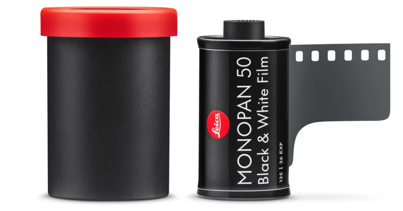
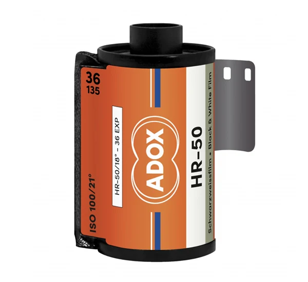
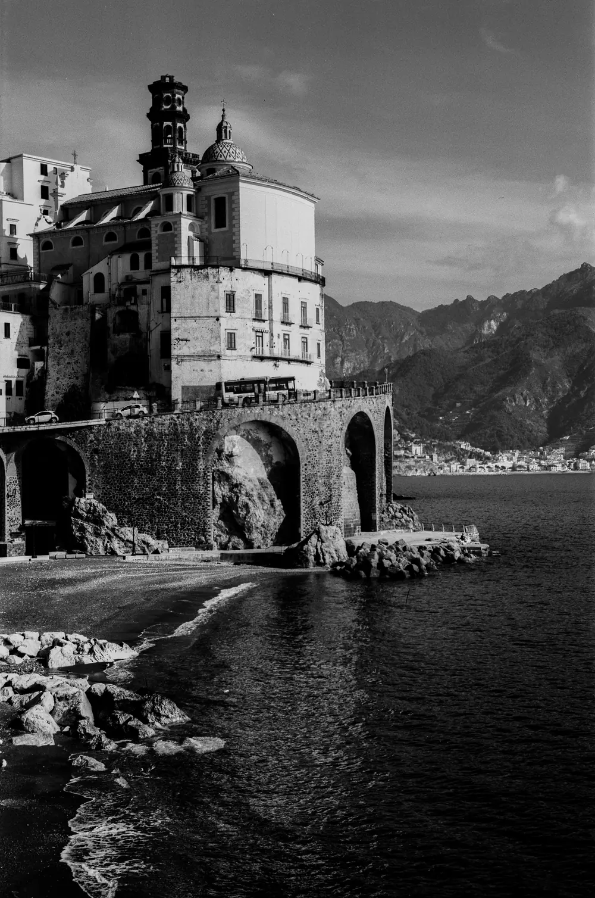
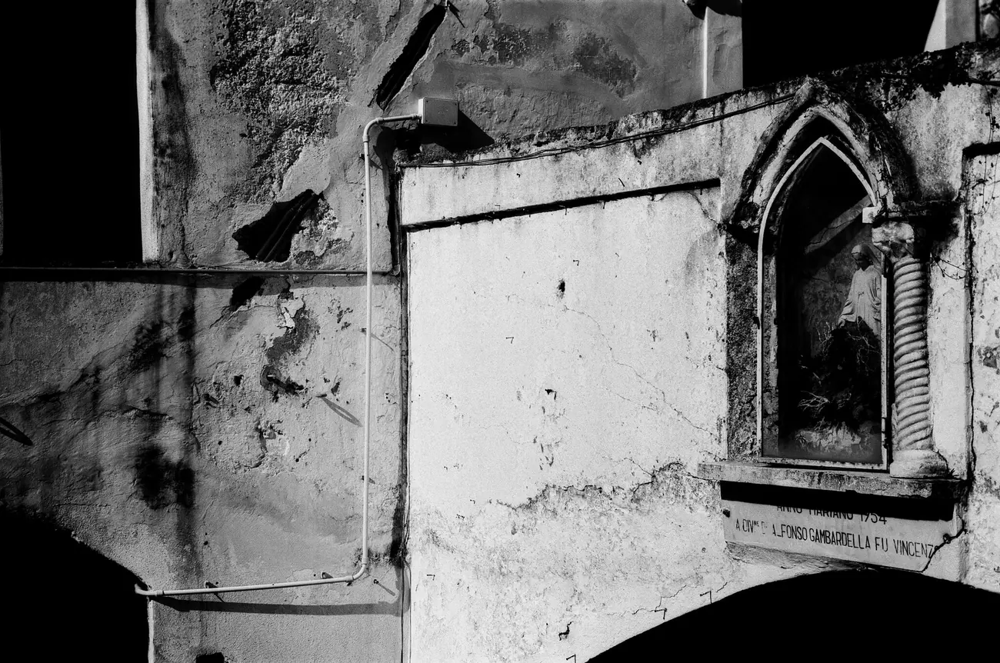
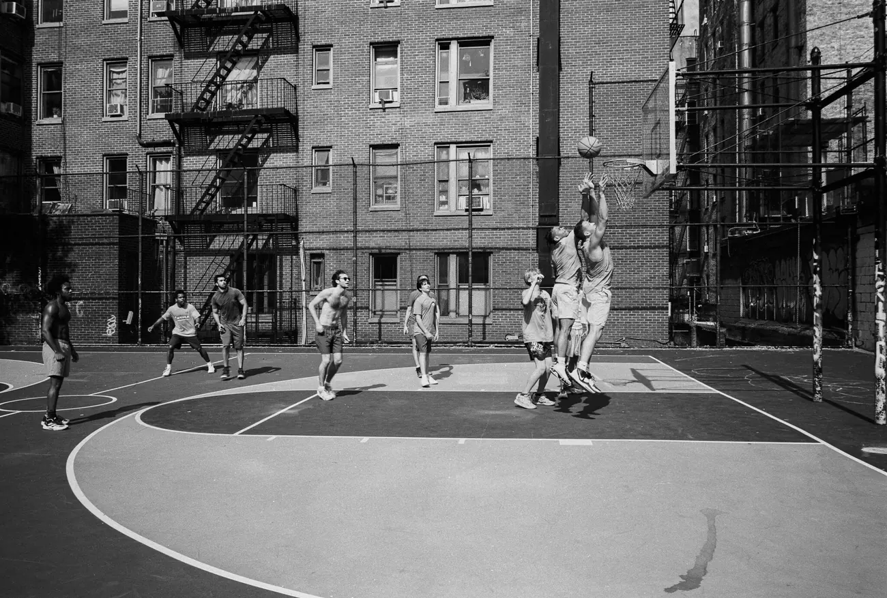
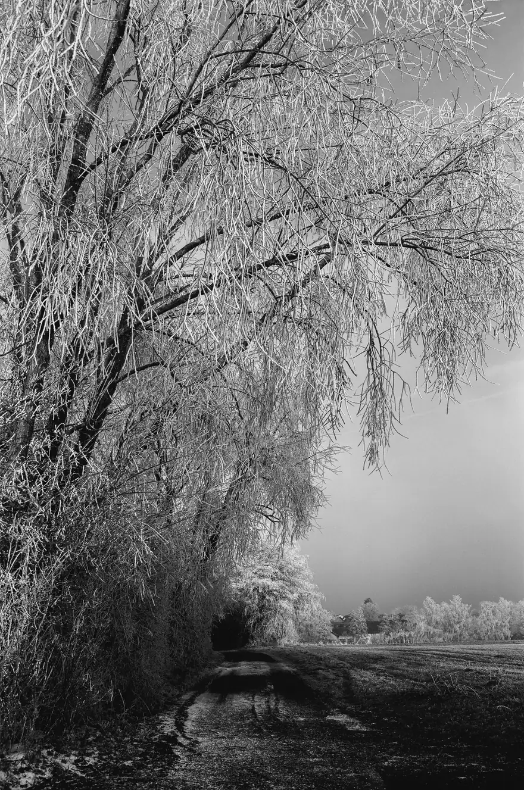
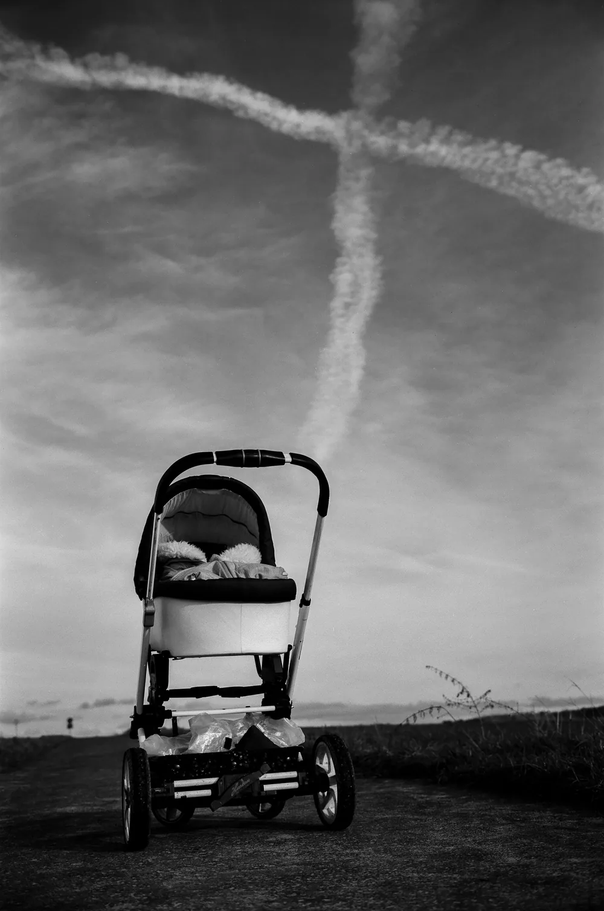
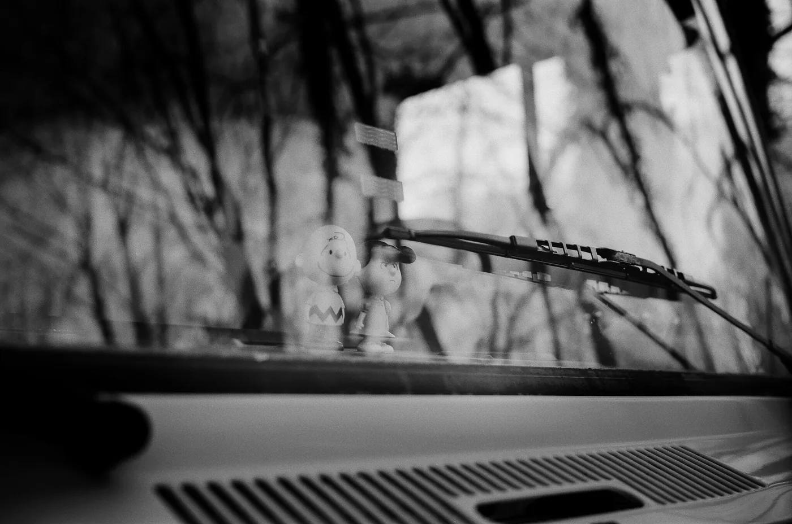

"라이카가 필름을 만들었다. 이 문장을, 쓰면서도 몇 번을 다시 봤다."
2025년은 라이카 I이 나온 지 딱 100년 되는 해였다. 라이카는 이 해를 그냥 넘기지 않았다. 오스카 바르낙이 남긴 '작은 네거티브, 큰 사진'을 다시 꺼내면서, 자기 이름을 단 첫 35mm 필름을 내놓은 것이다. 이름은 Monopan 50. 단색을 뜻하는 '모노'에 디지털 흑백 카메라 모노크롬을 슬쩍 겹쳐 놓은 작명이다. 상자에는 라이츠 베츨라(Ernst Leitz Wetzlar) 시절의 옛 로고와 'KLEINFILM(소형 필름)'이라는 독일어까지 새겨 넣었다. 필름 한 통에 이렇게까지 하나 싶다가도, 진열장에 놓인 걸 보면 이내 수긍하게 된다.

그런데, 라이카가 만든 게 맞나
짚고 넘어갈 게 있다. 라이카는 필름을 직접 만드는 회사가 아니다. Monopan 50 안에 든 건 아그파 아비포트 팬(Agfa Aviphot Pan) 계열이다. 원래 벨기에에서 항공 촬영용으로 쓰던, 적색 감도가 유난히 넓은 원판. 그리고 이 원판, 어쩐지 낯이 익다. 아독스(ADOX) HR-50이 바로 같은 뿌리에서 나왔다.

두 필름 통을 나란히 놓으면 닮아도 너무 닮았다. '껍데기만 라이카 아니냐'는 말이 발매 직후부터 나온 것도 그래서다. 그렇다고 완전히 같은 필름이라 잘라 말하긴 어렵다. 같은 원판을 쓰되 라이카 쪽 요구에 맞춰 마감 약품을 손봤을 거라는 얘기가 있고, 실제로 Monopan 50이 HR-50보다 하이라이트를 조금 더 일찍 놓친다는 사용기도 있다. 같은 부모에게서 나왔지만 성격은 조금 다른 형제. 그 정도로 보면 맞다.
찍어 보면
항공 원판 출신이라는 게 사진에 고스란히 남는다. ISO 50이라는 낮은 감도, 최대 280 line pairs/mm까지 가는 해상력, 그리고 눈에는 안 보이는 780nm 근적외선까지 잡아내는 적색 감도. 이 셋이 겹치면 꽤 특이한 흑백이 나온다.

우선 입자가 거의 없다. 초미립자라 크게 뽑아도 면이 매끈하고, 디테일은 촘촘하게 남는다. 도시나 건축, 풍경처럼 선이 많은 장면에서 특히 해상력이 돋보인다.
대비는 센 편이다. 계조가 넓게 깔리다가 밝은 쪽에서 탁 하고 하얗게 끊긴다. 부드럽게 풀어주는 필름이 아니라 또렷하고 단단하게 맺는 필름이다. 여기에 넓은 적색·근적외선 감도가 더해지면서 하늘은 유난히 어둡게 가라앉고, 서리나 구름, 흰 벽 같은 밝은 것들은 은빛으로 뜬다. 레드 필터를 물리면 그 차이가 더 벌어진다.
대신 느리다. ISO 50은 빛을 정직하게 요구한다. 흐린 날이나 실내라면 삼각대를 꺼내야 하고, 맑은 날이면 밝은 렌즈를 마음껏 열어도 된다.




느려서 좋은 것
그 느린 감도가 꼭 손해만은 아니다. 대낮에도 조리개를 활짝 열 수 있으니, 얕은 심도로 인물이나 정물을 담기엔 오히려 편하다. 대비가 센 필름인데도 부드러운 빛 아래에서는 피부가 매끄럽게 앉는다.

현상은 까다롭지 않다
전용 약품 같은 건 필요 없다. 웬만한 흑백 현상액이면 다 되고, 집에서 직접 현상해도 무리 없다. 데이터가 막막하면 뿌리가 같은 HR-50 값을 그대로 출발점으로 삼으면 된다. Massive Dev Chart에 올라온 HR-50 시간, 이를테면 로디날(Rodinal) 1+25에 22°C 10분 세미-스탠드 같은 레시피가 좋은 기준이 된다. 한 가지, 하이라이트가 잘 날아가는 필름이니 밝은 부분에 노출을 맞추고 현상을 너무 끌지 않는 편이 안전하다.
그래서, 살 만한가
냉정하게 따지면 답은 이미 나와 있다. 딱 이 룩이 목적이라면 아독스 HR-50이나 롤라이(Rollei) 계열 아비포트를 훨씬 싸게 사서 같은 그림을 얻을 수 있다. Monopan 50은 지금 나와 있는 135 흑백 필름 중에서도 비싼 축이다. 롤당 10달러다.
그런데도 이 필름에 손이 가는 이유가 있다. 라이카 I 100주년이라는 이야기, 옛 감성으로 꾸민 4종 패키지, 그리고 라이카로 찍어 라이카 필름을 감아 넣는다는 그 완결감. 필름은 어차피 손에 쥐고 쓰는 물건이고, 어떤 물건은 성능표 바깥에서 값이 매겨진다. Monopan 50이 가장 싼 아비포트는 아니지만, 가장 라이카다운 아비포트인 건 분명하다. 그 한 줄에 마음이 움직인다면 더 고민할 것도 없다.
하나만 더 보태자면, 라이카가 필름을 다시 '팔 만한 물건'으로 봤다는 것 자체가 필름 쓰는 입장에선 반갑다. 큰 이름 하나가 진열장에 자리를 더 만들었다. 껍데기든 알맹이든, 그 자리는 남는다.